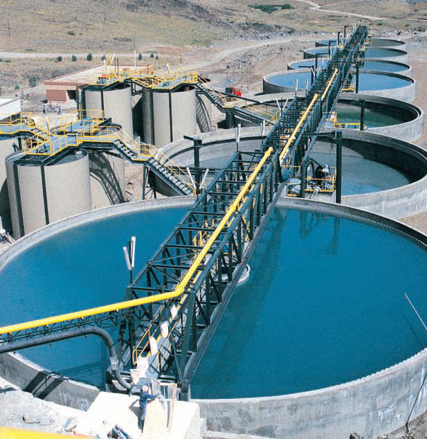
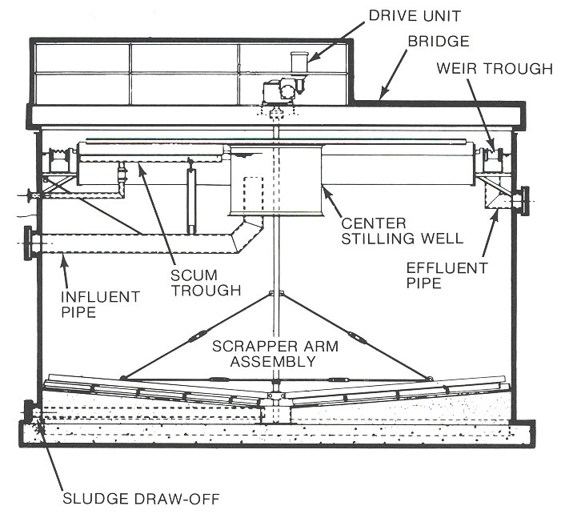

Clarifier

Clarification is the oldest and most widely used operation in the effective treatment of wastewater. The operation consists of removing sediment, turbidity and floating material from raw wastewater.A clarifier is generally used to remove solid particulates or suspended solids from liquid for clarification and (or) thickening. Concentrated impurities, discharged from the bottom of the tank are known as sludge, while the particles that float to the surface of the liquid are called scum.
The two types of wastewater clarifiers:
- parallel plate clarifier
- circular mechanical type clarifier
There are also two types of circular mechanical clarifiers:
- circular center feed clarifier
- circular peripheral flow clarifier

Circular Center Feed Wastewater Clarifier
The circular center feed clarifier operates with the effluent entering through a center stilling well with the flow being forced downward. This ensures the proper residence time of the water in the clarifier to allow for the settling of the solids. The water then rises and exits through a wall mounted weir trough that is placed on the inner circumference of the clarifier. A skimmer sweeps over the surface of the clarifier to collect any floatable solids and removes them via the scum trough. A scraper arm assembly passes over the bottom of the clarifier to densify and condition the settled solids prior to being drawn off for additional processing.

The circular peripheral flow clarifier operates with the water flow entering the system at the periphery. The water flow is evenly distributed and spirals down around the annulus of the clarifier by means of a specially designed baffle skirt. This configuration provides for maximum settling of solids toward the sludge pick-up. The water flow exits the clarifier through a center supported weir trough. A scraper arm assembly sweeps the bottom of the clarifier to densify and condition the settled solids prior to being drawn off for additional processing.
The circular center feed and circular peripheral flow clarifiers offer the user a variety of features and applications. Circular clarifiers are found in municipal, commercial, and industrial applications; they can be used for primary and secondary clarification; and they are available in steel or the internal components can be packaged for installation in a concrete construction (concrete by others).